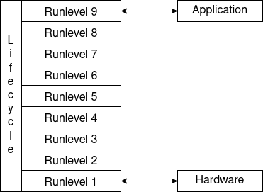

lifecycle - App Lifecycle Management
Overview
This module provides classes and interfaces that allow the user to define and execute the lifecycle of an application.
Application Lifecycle
An application running on a core usually depends on several services like an ethernet stack and other buses, a logger, a non volatile storage among others.
Each of these services as well as the application itself will at some point be initialized, run and eventually shut down. For each service a LifecycleComponent can be created that controls this service. The LifecycleManager is there to make sure these transitions are performed on the lifecycle components.
Usually the lifecycle needs to process in a certain order. First the hardware has to be initialized, then logging or networking, and finally the application itself is run.
{kind=link}
In order to model simple dependencies between services each lifecycle component is assigned a runlevel at which it shall be initialized, run, or shut down. During startup the lifecycle manager goes through all runlevels in ascending order. At each runlevel, first all its components are initialized, and then all its components are run. During shutdown components are shut down in reverse, i. e. in descending order of their runlevels. Note that even if a component is shut down and run again by a sequence of calls to transitionToLevel(), each component is initialized at most once by the lifecycle manager the first time its run level is reached.
Asynchronous State Transitions
A component implementing LifecycleComponent must provide implementations for the three state transition functions init(), run() and shutdown(). After registering a lifecycle component to the lifecycle manager, the lifecycle manager will make sure that these are executed at the appropriate time.
At the end of each state transition implementation the method LifecycleComponent::transitionDone() must be called to tell the lifecycle manager that the component has completed its transition. This explicit callback allows the implementation to schedule asynchronous operations from within a transition and return early, as long as the asynchronous operation eventually calls transitionDone().
All transitions are scheduled asynchronously by the lifecycle manager. For this an implementer of LifecycleComponent must also provide an implementation of getTransitionContext() that specifies in which async context to execute which transition. For convenience there are several derived classes that should be used as a base for implementing a lifecycle component. They handle the most common use cases and implement getTransitionContext() accordingly.
In the simplest case, e. g. when using the SimpleLifecycleComponent, transitions are scheduled in the same context as the lifecycle manager itself.
The classes SingleContextLifecycle in include/lifecycle/SingleContextLifecycleComponent.h and AsyncLifecycleComponent in include/lifecycle/AsyncLifecycleComponent.h allow the implementer to specify a context in which to schedule the transitions, or even different contexts for each transition type, respectively.
A small sample lifecycle component could look like this:
// #include <lifecycle/SingleContextLifecycleComponent.h>
// #include <async/Types.h>
namespace lifecycle
{
class ComponentA : public ::lifecycle::SingleContextLifecycleComponent
{
public:
// Inheriting from `SingleContextLifecycleComponent` makes all transitions be
// scheduled within the same `context`.
explicit ComponentA(::async::ContextType const context)
: ::lifecycle::SingleContextLifecycleComponent(context)
{}
void init() override
{
// Perform component specific initialization. Will only be called when this component's
// runlevel is first reached.
transitionDone();
}
void run() override
{
// Perform tasks to run the component.
transitionDone();
}
void shutdown() override
{
// Perform shutdown sequence of the component.
transitionDone();
}
};
Lifecycle Manager
The LifecycleManager in include/lifecycle/LifecycleManager.h is the central piece of the lifecycle module. It stores the component registry and triggers initialization, running, and shutdown of these components. It is declared using a declare::LifecycleManager with static capacities of components, runlevels, and components per runlevel, and a system time callback.
Components can be added via addComponent(). The function transitionToLevel() will initialize and then run all components in each runlevel, up to the target level. Or, if a lower level is targeted for a transition, all components in levels above the target level are shut down, in descending order of their runlevel.
Sleep/Wakeup
Sometimes the ECU needs to be suspended, i. e. go to sleep and temporarily cease its function but not be completely shut down. To achieve this, the init() and run() methods behave differently with respect to transitionToLevel(). The init() method of a lifecycle component is only ever called once when the lifecycle component’s runlevel is reached from a lower level, whereas run() is called every time the lifecycle component’s runlevel is reached from a lower level.
The lifecycle component can thus implement the run() and shutdown() methods to be complementary to each other, so as to start and stop the functionality, respectively. The init() method however should perform the more fundamental initialization that is not to be redone everytime the lifecycle component is suspended or woken up.
This also implies that if any sleep/wakeup runlevel transition is desired then shutdown() should not undo the work done in init(), since init() will not be called again.
Lifecycle Logger
The logging component ::util::logger::LIFECYCLE can be used to perform lifecycle transition logging.
Lifecycle Listener
In the LifecycleManager there are methods addLifecycleListener() and removeLifecycleListener() to add and remove listeners implementing ILifecycleListener from include/lifecycle/ILifecycleListener.h. Each listener will be notified when a transition has happened.
Code Example
An example application lifecycle is demonstrated in the following code snippet. The LifecycleManager itself is scheduled within the managerContext. There are three lifecycle components. ComponentA runs its transitions in the ethernetContext and ComponentB in the diagnosisContext, both are in runlevel 1. There is also ComponentC in runlevel 2, its transitions running also in the ethernetcontext. The lifecycle first transitions from runlevel 0 to 2, then back to runlevel 1, and then eventually from 2 to 0 again.
// #include <lifecycle/LifecycleManager.h>
// #include <async/Types.h>
::async::ContextType const managerContext(1);
::async::ContextType const ethernetContext(2);
::async::ContextType const diagnosisContext(3);
size_t const MAX_NUM_COMPONENTS = 3;
size_t const MAX_NUM_LEVELS = 2;
size_t const MAX_NUM_COMPONENTS_PER_LEVEL = 2;
::lifecycle::declare::
LifecycleManager<MAX_NUM_COMPONENTS, MAX_NUM_LEVELS, MAX_NUM_COMPONENTS_PER_LEVEL>
lifecycleManager(
managerContext,
::lifecycle::LifecycleManager::GetTimestampType::create<&getSystemTimeUs32Bit>());
// Transitions of components A and C are executed mutually exclusively.
ComponentA componentA(ethernetContext);
ComponentB componentB(diagnosisContext);
ComponentC componentC(ethernetContext);
// Components A and B are at the same run level.
lifecycleManager.addComponent("component A", componentA, 1);
lifecycleManager.addComponent("component B", componentB, 1);
lifecycleManager.addComponent("component C", componentC, 2);
lifecycleManager.transitionToLevel(2); // `init()` then `run()` of all components are called
lifecycleManager.transitionToLevel(1); // `shutdown()` of C is called
lifecycleManager.transitionToLevel(2); // only `run()` of C is called, `init()` already called
lifecycleManager.transitionToLevel(0); // `shutdown()` is called on all components
Simplified Sequence Diagram
The sequence diagram of its complete lifecycle where most of the asynchronicity is simplified is as follows:
![participant App
participant LifecycleManager as LM
participant "ComponentA [rl. 1]" as A
participant "ComponentB [rl. 1]" as B
participant "ComponentC [rl. 2]" as C
App ->> LM ++ : <font color=blue><b>transitionToLevel(2)</b></font>
par
LM -> A ++ : init()
LM <- A -- : transitionDone()
else
LM -> B ++ : init()
LM <- B -- : transitionDone()
end
== All runlevel 1 init() tasks are completed ==
par
LM -> A ++ : run()
LM <- A -- : transitionDone()
else
LM -> B ++ : run()
LM <- B -- : transitionDone()
end
== All runlevel 1 run() tasks are completed, runlevel 1 reached ==
LM -> C ++ : init()
LM <- C -- : transitionDone()
== All runlevel 2 init() tasks are completed ==
LM -> C ++ : run()
LM <- C -- : transitionDone()
== All runlevel 2 run() tasks are completed, runlevel 2 reached, nothing to be done ==
App <-[hidden]- LM -- :
App ->> LM ++ : <font color=blue><b>transitionToLevel(1)</b></font>
LM -> C ++ : shutdown()
LM <- C -- : transitionDone()
== All runlevel 2 shutdown() tasks are completed, runlevel 1 reached, nothing to be done ==
App <-[hidden]- LM -- :
App ->> LM ++ : <font color=blue><b>transitionToLevel(2)</b></font>
== Runlevel 2 has been reached before, no need to call init() again ==
LM -> C ++ : run()
LM <- C -- : transitionDone()
== All runlevel 2 run() tasks are completed, runlevel 2 reached, nothing to be done ==
App <-[hidden]- LM -- :
App ->> LM ++ : <font color=blue><b>transitionToLevel(0)</b></font>
LM -> C ++ : shutdown()
LM <- C -- : transitionDone()
== All runlevel 2 shutdown() tasks are completed, runlevel 1 reached ==
par
LM -> A ++ : shutdown()
LM <- A -- : transitionDone()
else
LM -> B ++ : shutdown()
LM <- B -- : transitionDone()
end
== All runlevel 1 shutdown() tasks are completed, runlevel 0 reached, nothing to be done ==
App <-[hidden]- LM -- :](../../../../_images/plantuml-eb5686f03e27e50cb8101275456b4f0f82b47d95.png)
Detailed Sequence Diagram
The detailed sequence diagram for the first init() transitions only with asynchronous calls explicitly displayed is as follows:
![participant App
participant LifecycleManager as LM
participant Async as AS
participant "LifecycleManager:managerContext" as MC #yellow
participant "ComponentA:ethernetContext" as A #lightgreen
participant "ComponentB:diagnosisContext" as B #pink
activate AS
App -> LM ++ : transitionToLevel(2)
LM -> AS ++ #yellow : schedule(:managerContext, LifecycleManager)
LM <-- AS -- :
App <-- LM --
AS -> MC ++ #yellow : run(:managerContext, LifecycleManager)
== Runlevel 1 init() tasks need to be scheduled ==
AS <- MC ++ #lightgreen : schedule(:ethernetContext, ComponentA::init())
AS --> MC -- :
AS <- MC ++ #pink : schedule(:diagnosisContext, ComponentB::init())
AS --> MC -- :
AS <-- MC -- : (run)
par both init() transitions are executed. Since they were scheduled in different contexts they can run concurrently.
AS -> A ++ #lightgreen : run(:ethernetContext, ComponentA::init())
LM <- A ++ : transitionDone()
LM ->> AS ++ #yellow : schedule(:managerContext, LifecycleManager)
LM <-- AS -- :
LM --> A -- :
AS <-- A -- : (run)
else
AS -> B ++ #pink : run(:diagnosisContext, ComponentB::init())
LM <- B ++ : transitionDone()
LM ->> AS ++ #yellow : schedule(:managerContext, LifecycleManager)
LM <-- AS -- :
LM --> B -- :
AS <-- B -- : (run)
end
AS -> MC ++ #yellow : run(:managerContext, LifecycleManager)
== All runlevel 1 init() tasks are completed, runlevel 1 run() tasks need to be scheduled next... ==](../../../../_images/plantuml-8fdd13c1cedaad5c7c4722d7e4980f084b1be771.png)